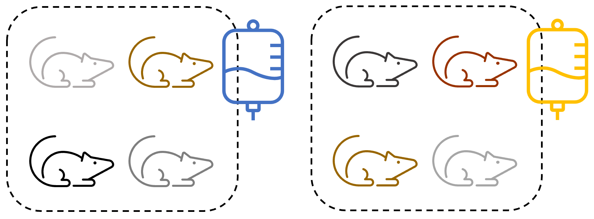

3 Independence & pseudoreplication
This section of the course materials introduces the primary motivation behind the use of mixed effects models: independence.
3.1 Independence
Independence of observations is a common and key assumption of many statistical tests, including the standard linear model.
For observations or measurements to be independent, each measurement should be in no way influenced by or related to other measurements. We’ll unpack this a bit more further down this page.
When this assumption isn’t adequately met (as with all assumptions), the results of our test and the conclusions we draw from those results are less trustworthy. Non-independence is a particularly tricky violation of assumptions, because unlike other things such as normality or equality of variance, there is no nice diagnostic plot that we can construct to test it. Instead, we have to do the work ourselves, to understand the design of our experiments and the nature of our variables.
3.1.1 Biological vs technical replicates
A key concept here is the distinction between biological replicates and technical replicates:
- Biological, or experimental, replicate
- Distinct experimental units that contribute towards the sample size; each of these “experimental units” is a unique member of the underlying population of interest. Collecting data from multiple biological replicates allows us to quantify the variation between individuals of this population.
- Technical replicate
- Repeated measurements of the same sample/biological replicate. Technical replicates are usually taken to help us quantify the variation within a measurement, to increase precision.
If you are researching global human height, for instance, then each unique human would be a biological replicate. If we measured each person with three different tape measures to ensure consistency, then these three measurements per person would be technical replicates.
3.1.2 Pseudoreplication
Pseudoreplication occurs when technical replicates are erroneously treated as biological replicates - in other words, observations are treated as though they are independent, when really they are not. You may sometimes see this referred to as a “unit of analysis” error.
This artificially inflates our sample size, meaning that any statistics and p-values that are calculated will be incorrect, and there is a highly inflated likelihood of a false positive (type I) error.
Pseudoreplication is unfortunately quite a big problem in biological and clinical research, probably because many people aren’t really aware of the issue or how to recognise whether they’re accidentally doing it in their analysis. Several review articles have investigated the incidence of pseudoreplication in published papers, and have estimated that as many as 50% of papers in various fields may suffer from this problem, including neuroscience, animal experiments and cell culture and primate research. In fields like ecology and conservation, the estimated figure is sometimes even higher.
3.2 Three criteria for true independent replication
The reason that pseudoreplication is such an easy trap to fall into, is because identifying whether your observations are truly independent is not always as easy as it first sounds.
Let’s properly unpack what’s required for independence. There are three important criteria that must be met to have a true biological or experimental replicate:
- Random assignment to conditions
- The treatment must be applied independently
- Individuals must not affect each other
If these aren’t met, you have a technical replicate instead. And a technical replicate can’t contribute towards sample size in a standard linear model!
To understand these criteria better, let’s work through some examples.
Imagine a scenario in which a researcher is investigating the effect of two different treatments (perhaps different drugs) on outcomes in mice.
Experimental design 1
To speed up time, the research decides to apply the treatment to pregnant dams, and then to use the offspring as their sample.
There are three reasons why this does not work, and leads to pseudoreplication:
- The offspring are not assigned at random to the conditions - they are being assigned based instead on which litter they belong to. This means that their genetic similarity confounds the effect of the treatment conditions.
- The treatment is not being applied to each of the offspring independently - it’s being applied to the dams. This means that if there is an error in the measurement or administration, it will affect all the offspring in that litter.
- The offspring might affect one another after the treatment has been administered - either in utero, or after their birth.
The offspring are therefore not true biological replicates. The biological replicates are in fact the dams, with the offspring as technical replicates. We have an n = 2 here, rather than n = 8 as the researcher hoped.
Experimental design 2
To resolve the lack of independence in the way that the treatment is applied, the researcher might wait until the mice are born, and treat them individually.
However - we have only resolved one of the three problems. It’s still the case that:
- The offspring are not assigned at random.
- The offspring might affect one another after their birth, as they still share a mother and are kept in the same cage.
Experimental design 3
The researcher now tries a totally different tactic:

Now, they get 8 genetically unrelated mice, and separate them into two cages. They then put the treatment in the water of the cages.
This gives us random assignment to conditions - there is no systematic bias in which mice are assigned to which cage.
However:
- The treatment is not applied independently. If the researcher gets one of the doses wrong, it will be wrong for every mouse in that condition.
- Mice in the same cage may still affect each other - competing for resources, fighting, and so on.
Experimental design 4
Even if the researcher applies the treatment to mice independently, as below:
This still results in non-independence, as there may be other factors that affect entire cages (handling by different researchers, environmental conditions, etc.) and the mice in each condition are still able to influence one another.
Experimental design 5
The only way that the researcher could achieve true independent replication with this group would be with a set-up such as the following:
With this experimental design, we can see that:
- There is no systematic bias in assigning mice to conditions (e.g., based on genetics).
- The treatment is applied to each mouse independently.
- Animals in the same condition are kept in entirely separate cages (with company, if they require socialisation!) so that they can’t influence one another.
3.3 Variation = information
Having spent some time discussing what independence is, and what can happen when this assumption is violated for standard linear models, it’s now time to introduce the mixed effects model.
One very simple way to cope with pseudoreplication in your data is to average across your technical replicates, so that you have just one value per biological replicate. Then, your number of observations will match your number of biological replicates, and the problem is solved.
There are two downsides to this option, however, which often make a mixed effects model more appealing.
Sometimes we cannot average across our technical replicates. Sometimes, we instead have what is called a “repeated measures” design, where we have taken multiple measurements from a single individual, but these measurements are distinct from one another in some way (e.g., spread across different time points, or measured with different techniques).
Averaging across technical replicates means that we are losing a lot of information. The variation between those technical replicates can often tell us something interesting, either because it reflects some other variable (such as time) or because it can allow us to “partition” the variance that is due to the individual vs our variable(s) of interest and boost our statistical power (see this webpage for further discussion on partition of variance, in the context of a repeated measures ANOVA). In short, when we are able to attribute our variance to different sources, this variance is no longer simply noise - it is information.
Mixed effects models allow us to take the variance in our technical replicates into account when running our analysis. By keeping all the individual observations instead of averaging, we can preserve more statistical power, while avoiding the inflated risk of a false positive that comes with pseudoreplication.
3.4 Summary
- For true independent biological replication, our observations must meet 3 criteria
- If they do not meet these criteria, they are technical replicates (rather than biological replicates)
- Conflating technical replicates with biological replicates is called pseudoreplication, which causes an inflated risk of a false positive (type I) error, and violates the independence assumption of standard linear models
- Mixed effects models allow us to preserve statistical power and analyse repeated measures designs, while accounting for the lack of independence in our dataset